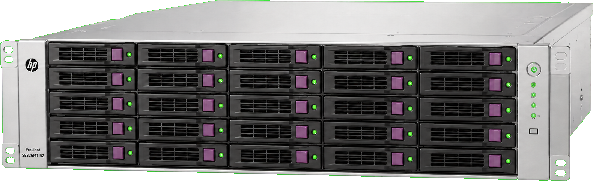

Pulpit
NAS online
Host:
nimbus
⌕
⌘ K
♧
0
◉
A
admin
⌄

⌁
Zasoby systemowe
0
%
— GHz
Średnie użycie
0
%
—
/
—
GB
W użyciu
↑
0
Mb/s
↓
0
Mb/s
LAN
—
Aktywność
09:00
09:15
09:30
09:45
10:00
10:15
10:30
10:45
11:00
▣
Udostępniono folder
Dane
○
Skanowanie dysków
Pule ZFS
♙
Kopia zapasowa
Backup_nocny
♧
Aktualizacja systemu
Kernel
⇩
Utworzono migawkę
Pula 1
Usługi
Zarządzaj usługami
›